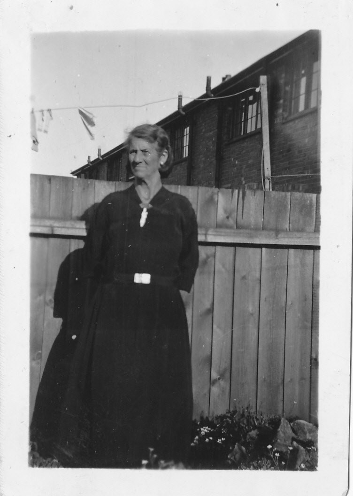
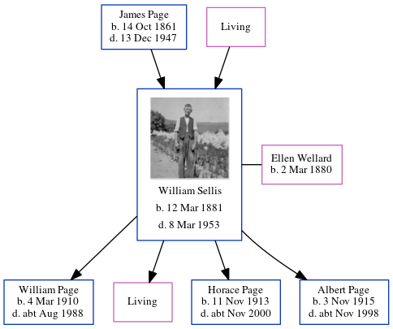

Ellen Fanny Maria Sellis (née Wellard) 1880 -
[ Home ] | [ Calendar ] | [ Surnames Index ] | [ Errors ] | [ Family History ]Ellen Wellard, the wife of William Ernest Sellis (the third cousin once-removed on the father's side of Nigel Horne), was born on 2 Mar 18801 and married William (a general labourer with whom she had 4 children: William Charles Richard, Lena H M, Horace Stanley Wallis and Albert Edward Jellico, along with 1 surviving child) in Dover, Kent, England around May 19002. On 29 Sept 1939, she was living at 65 Marshall Street, Folkestone, Kent1. She is buried in Hawkinge, Kent, England.
Children
- William Charles Richard was born on 4 Mar 1910
- Horace Stanley Wallis was born on 11 Nov 1913
- Albert Edward Jellico was born on 3 Nov 1915
Citations
- 1939 Register - Findmypast (was the wife of the head of the household)
- England & Wales Marriages 1837-2005 - Findmypast
Media
Ellen Fanny Maria Wellard

William Ernest Page - Ellen Wellard - Gravestone

1939 Register Transcription - TNA-R39-1721-1721B-021-44
England & Wales marriages 1837-2005 Transcription - BMD-M-1900-2-AZ-000408-316
Family Tree
Map
Generated by ged2site. Last updated on Jul 3, 2024
Known Issues
Burial place (Hawkinge, Kent, England) has no citations
Date of birth is known, but not place